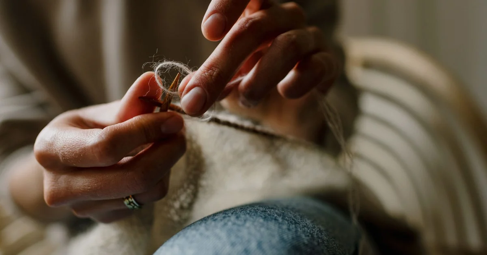
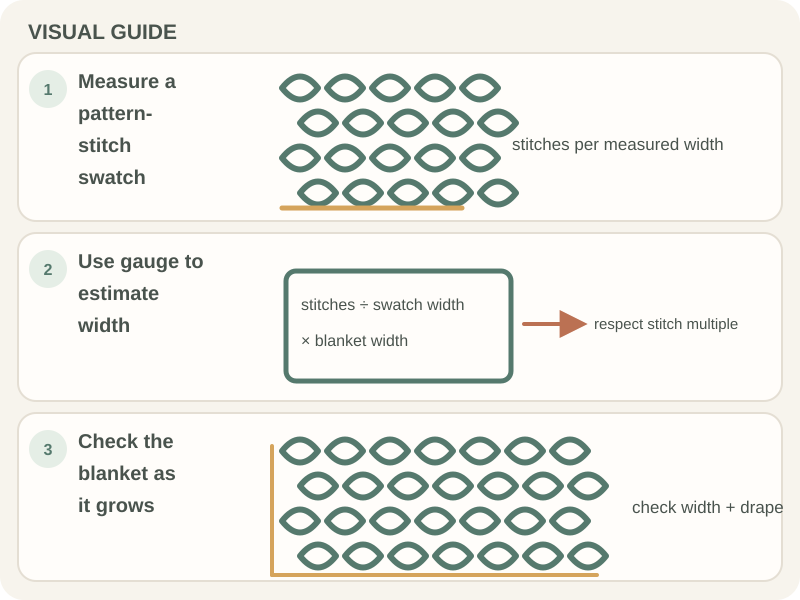

Beginner Projects · Beginner guide
How to Crochet a Simple Blanket as a Beginner
Plan a simple blanket from a target width, stitch gauge, and a manageable first swatch.

A blanket can become a large time and yarn commitment. A swatch helps estimate width and fabric, but finished dimensions depend on yarn, hook, stitch, and tension.
Before you begin
Choose construction and stitch before calculating the starting chain. Check for pattern multiples, turning-chain rules, or a stated gauge.
Step-by-step instructions
- Swatch the intended stitch and measure stitches across a known width.
- Convert target width using your measured gauge, then adjust to the pattern’s required stitch multiple.
- Work a few rows and remeasure. If width differs substantially, revisit gauge before continuing.
- Use pattern yardage when available; otherwise treat sample calculations as estimates and allow for swatching and edges.

What to check
Calculate, then verify a few rows
For example, 16 stitches across 4 inches equals 4 stitches per inch; a 40-inch target is about 160 stitches before adjusting for stitch multiple and edges. This is arithmetic, not a tested blanket size.
Frequently asked questions
Can I use the example count exactly?
Only if your swatch and pattern multiple support it. It is a starting estimate, not a tested pattern.
How do I keep a large blanket even?
Check width and stitch count periodically. Small edge changes accumulate across many rows.
Start with the blanket’s target dimensions
For simple blanket, use this as the starting rule: follow the pattern’s repeat, gauge, and yarn estimate for the intended size. The stitch repeat, gauge, and sizing notes affect the finished shape and amount of work. Read the relevant instructions before beginning and keep them nearby as you work. If a general tutorial and the pattern give different directions, follow the pattern’s stated convention; another project may use a different method.
Use the pattern’s repeat and gauge
Before proceeding, confirm the yarn amount, joining plan, and dimensions stated by the pattern. Write any project-specific choice in your notes so you can apply it consistently. If the pattern or label leaves the detail unclear, look for its own key or maker guidance rather than assuming that another project follows the same convention. This short check can prevent a small misunderstanding from affecting the rest of the work.
Check the width after early rows
A practical way to apply simple blanket: Read the pattern’s materials, repeat, size, and finishing notes, then work a small sample and verify the repeat before making many rows. If the stitch or fit is unfamiliar, make a small sample and compare its texture and shape with the pattern’s description before committing to many rows or rounds. Keep the sizing and care information with the project as it grows.
Estimate yarn from the pattern
A common mistake in simple blanket is changing stitch or yarn without recalculating what the pattern requires. Watch for this sign: the blanket’s dimensions or drape differs from the plan. That can change the size, shape, or fit from what the pattern describes. Compare the recent work with the pattern and locate the first point where they differ. Correct that detail before continuing; stretching the fabric or adding an unplanned step can hide the cause without fixing it.
Keep rows and edges consistent
If the blanket’s dimensions or drape differs from the plan, first check the yarn amount, joining plan, and dimensions stated by the pattern. Then compare the stitch count, repeat, sizing note, and construction method with what you actually have. Change one thing at a time so you can tell whether it addresses the problem. If the instructions and materials match but the result still differs, use the project’s gauge, sizing, substitution, or care notes as relevant; those are more useful than a universal fix.
Measure as the blanket grows
Remember: steady counts and periodic measurements make a large project manageable. A sample reveals how the chosen yarn and stitch behave before you repeat them across a larger piece. If you choose an alternative, record it and compare a small sample or written step before applying the change across the project.
Plan a manageable first blanket
To make simple blanket easier to repeat, use this sequence: work a small sample and verify the repeat before making many rows, inspect the result, and only then continue. At first, slow down at the point where the pattern changes direction, begins a new round, or starts a repeat. A removable marker or brief row note can hold your place while you learn the construction. Once the sequence is clear, you can work more steadily without guessing which loop or instruction comes next.
Conclusion: Simple blanket
Keep this lesson in mind: steady counts and periodic measurements make a large project manageable. Use the pattern’s gauge, repeat, and sizing notes as you continue. Measure the blanket periodically against the planned dimensions. A small difference in gauge can accumulate over many rows, so check before continuing far.